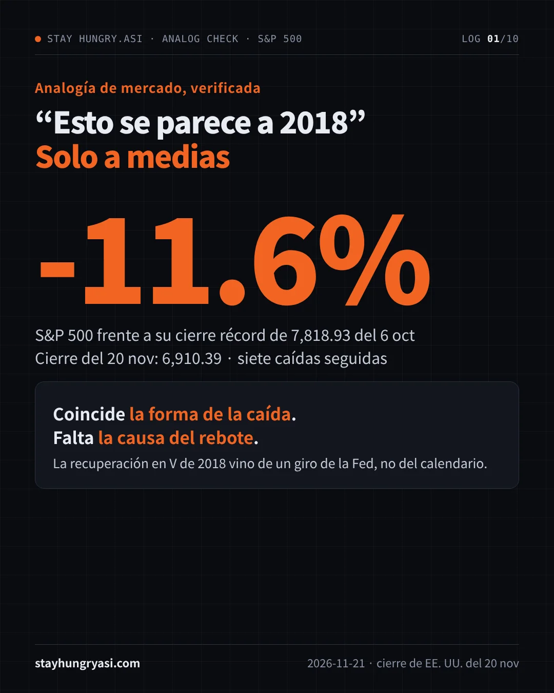
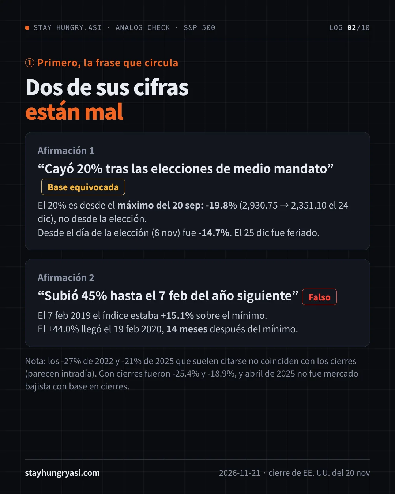
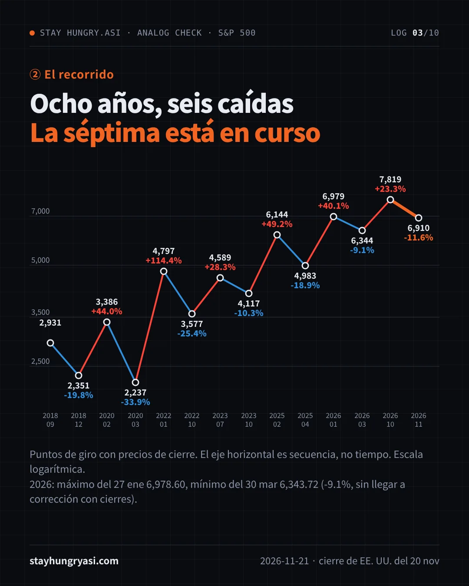
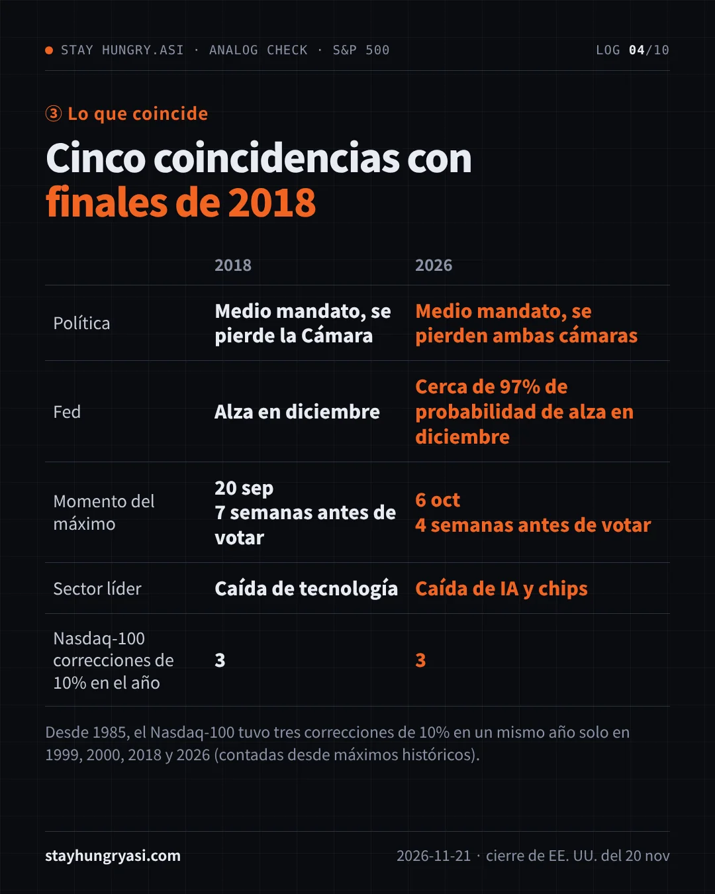
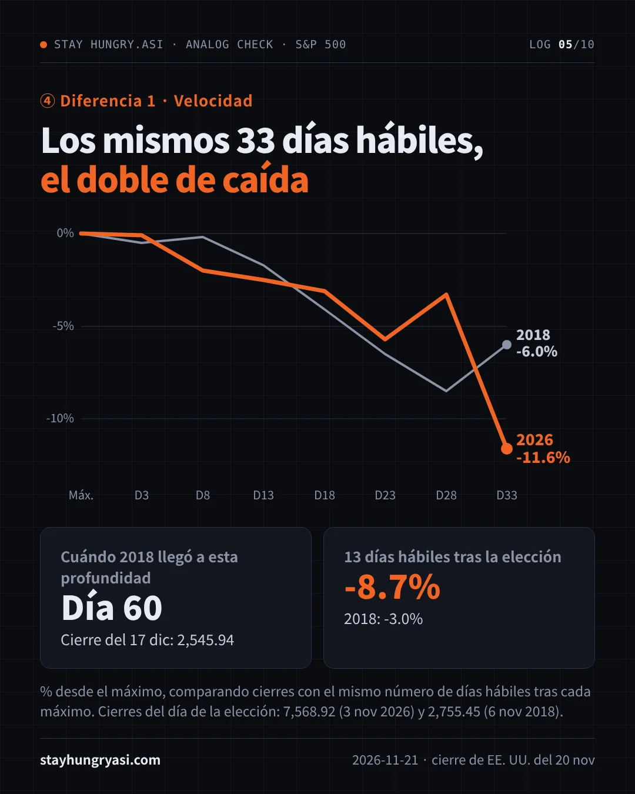
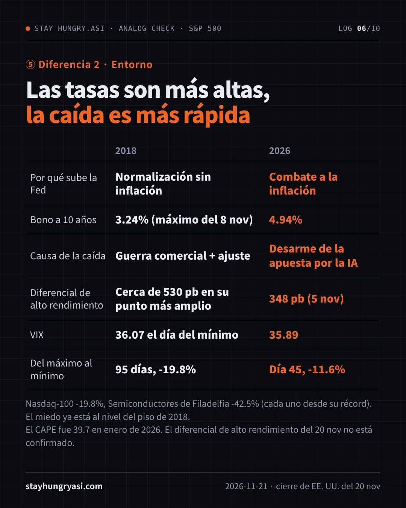
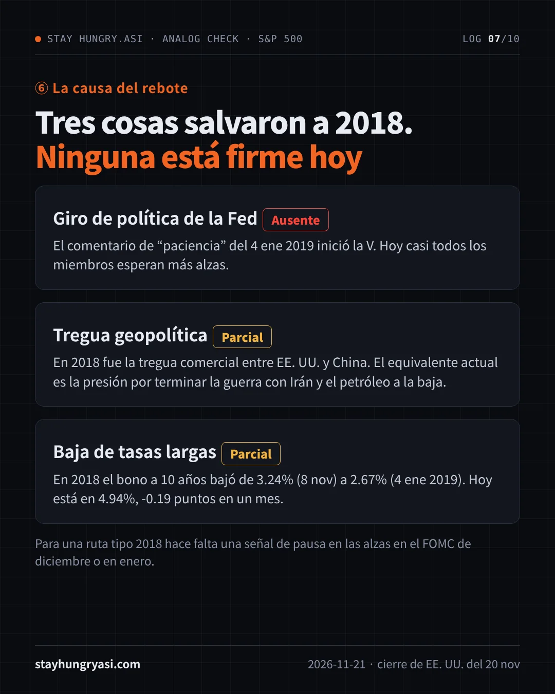
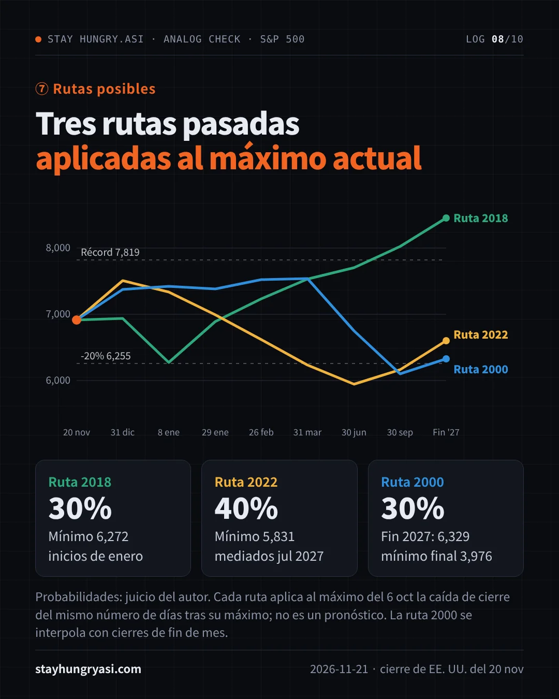
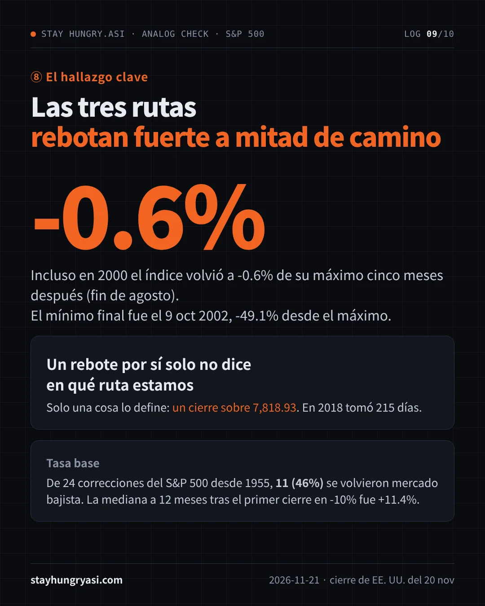
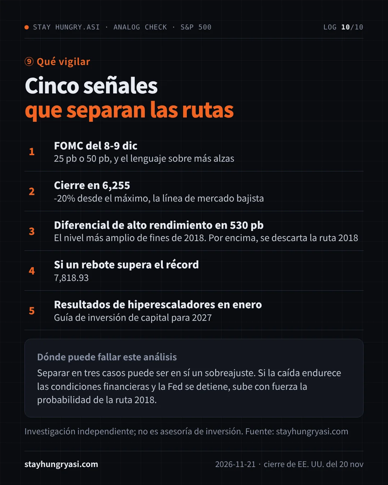

Datos al 21 de noviembre de 2026 (hora de Corea), cierre de EE. UU. del 20 de noviembre · stayhungryasi.com
Convenciones: todos los niveles del índice son cierres, contrastados con una tabla diaria de cierres. Las probabilidades de cada ruta son juicio subjetivo del autor y los niveles de las rutas aplican caídas pasadas; no son pronósticos. Lo que no se pudo confirmar se marca como 'no confirmado'. No es asesoría de inversión.
Lo esencial en 10 tarjetas. Toque una imagen para ampliarla.










| Afirmación | Real con cierres | Veredicto |
|---|---|---|
| “Cayó 20% tras las elecciones de medio mandato” | 2018-09-20 2,930.75 → 2018-12-24 2,351.10 = -19.78%. Desde el día de la elección (2018-11-06), 2,755.45: -14.67%. El 25 de diciembre fue feriado | El 20% es desde el máximo. Tras la elección fue cerca de 15% |
| “Subió 45% hasta el 7 feb del año siguiente” | 2019-02-07 2,706.05 = +15.10% desde el mínimo. 2020-02-19 3,386.15 = +44.02% | Falso. Tomó 14 meses |
Nota: los -27% de 2022 y -21% de 2025 que suelen citarse no coinciden con los cierres (parecen intradía). Con cierres fueron -25.4% y -18.9%, y abril de 2025 no fue mercado bajista con base en cierres.
| Máximo | Mínimo | Caída | Alza desde el mínimo previo |
|---|---|---|---|
| 2018-09-20 2,930.75 | 2018-12-24 2,351.10 | -19.8% | - |
| 2020-02-19 3,386.15 | 2020-03-23 2,237.40 | -33.9% | +44.0% |
| 2022-01-03 4,796.56 | 2022-10-12 3,577.03 | -25.4% | +114.4% |
| 2023-07-31 4,588.96 | 2023-10-27 4,117.37 | -10.3% | +28.3% |
| 2025-02-19 6,144.15 | 2025-04-08 4,982.77 | -18.9% | +49.2% |
| 2026-01-27 6,978.60 | 2026-03-30 6,343.72 | -9.1% | +40.1% |
| 2026-10-06 7,818.93 | 2026-11-20 6,910.39 (en curso) | -11.6% | +23.3% |
Las fuentes dan 4,796.56 o 4,796.59 para el cierre del 2022-01-03; se usa 4,796.56. Tiempo del máximo a un nuevo récord: 215 días en 2018, 181 en 2020, 746 en 2022 y 128 en 2025.
| Concepto | 2018 | 2026 |
|---|---|---|
| 33 días hábiles tras el máximo | -6.0% (2018-11-06) | -11.6% (2026-11-20) |
| Cuándo se llegó a -11.6% | Día 60 (2018-12-17, 2,545.94) | Día 33 |
| 13 días hábiles tras la elección | -3.0% (2,755.45 → 2,673.45) | -8.7% (7,568.92 → 6,910.39) |
| Fed en diciembre | Alza y luego giro el 2019-01-04 | Cerca de 97% de probabilidad de alza |
| Bono a 10 años | 3.24% (2018-11-08) → 2.67% (2019-01-04) | 4.94% (2026-11-20) |
| Diferencial de alto rendimiento | Cerca de 530 pb en su punto más amplio | 348 pb (2026-11-05); 2026-11-20 no confirmado |
| VIX | 36.07 (día del mínimo) | 35.89 |
| Índices adelantados | - | Nasdaq-100 -19.8%, Semiconductores de Filadelfia -42.5% |
Comparación con los mismos días hábiles (días 3, 8, 13, 18, 23, 28 y 33 tras el máximo): 2018 en -0.5, -0.2, -1.7, -4.1, -6.5, -8.5, -6.0%. 2026 en -0.1, -2.0, -2.5, -3.1, -5.7, -3.3, -11.6%.
| Motor del rebote de 2018 | Hoy | Sustento |
|---|---|---|
| Giro de política de la Fed | Ausente | El comentario de “paciencia” del 4 ene 2019 inició la V. Hoy casi todos los miembros esperan más alzas. |
| Tregua geopolítica | Parcial | En 2018 fue la tregua comercial entre EE. UU. y China. El equivalente actual es la presión por terminar la guerra con Irán y el petróleo a la baja. |
| Baja de tasas largas | Parcial | En 2018 el bono a 10 años bajó de 3.24% (8 nov) a 2.67% (4 ene 2019). Hoy está en 4.94%, -0.19 puntos en un mes. |
Para una ruta tipo 2018 hace falta una señal de pausa en las alzas en el FOMC de diciembre o en enero.
| Fecha (días tras el máximo) | Ruta 2018 | Ruta 2022 | Ruta 2000 |
|---|---|---|---|
| 2026-12-31 (86) | 6,936 | 7,502 | 7,376 |
| 2027-01-08 (94) | 6,272 | 7,336 | 7,423 |
| 2027-01-29 (115) | 6,890 | 6,989 | 7,379 |
| 2027-02-26 (143) | 7,229 | 6,615 | 7,525 |
| 2027-03-31 (176) | 7,530 | 6,230 | 7,540 |
| 2027-06-30 (267) | 7,702 | 5,945 | 6,746 |
| 2027-09-30 (359) | 8,023 | 6,167 | 6,103 |
| 2027-12-31 (451) | 8,454 | 6,603 | 6,329 |
| Mínimo | 6,272 (cerca del 2027-01-08) | 5,831 (mediados de 2027-07) | 3,976 (2029-04) |
| Regreso al récord | 2027-05 | 2028-10 | - |
Cada valor multiplica el máximo del 2026-10-06, 7,818.93, por la caída de cierre del mismo número de días tras su máximo. No hubo datos diarios de 2000, así que esa ruta interpola cierres de fin de mes derivados de rendimientos mensuales; su base, el cierre de fin de 1999 de 1,469.25, no se pudo contrastar (no confirmado). Sí se contrastaron el máximo de 2000, 1,527.46 (2000-03-24), y el mínimo, 776.76 (2002-10-09, -49.1%). A fines de agosto de 2000 el cierre estaba -0.6% bajo el máximo.
| Ruta | Probabilidad | Condición |
|---|---|---|
| Ruta 2018 | 30% | La Fed señala una pausa en las alzas; el diferencial de alto rendimiento sigue bajo 530 pb |
| Ruta 2022 | 40% | Siguen las alzas y las utilidades se sostienen |
| Ruta 2000 | 30% | Se recorta la inversión en IA para 2027; se deteriora la deuda ligada a la IA |
De 24 correcciones del S&P 500 desde 1955, 11 (46%) se volvieron mercado bajista. La mediana a 12 meses tras el primer cierre en -10% fue +11.4%. Un rebote por sí solo no dice en qué ruta estamos. Solo una cosa lo define: un cierre sobre 7,818.93. En 2018 tomó 215 días.
Separar en tres casos puede ser en sí un sobreajuste. Si la caída endurece las condiciones financieras y la Fed se detiene, sube con fuerza la probabilidad de la ruta 2018.